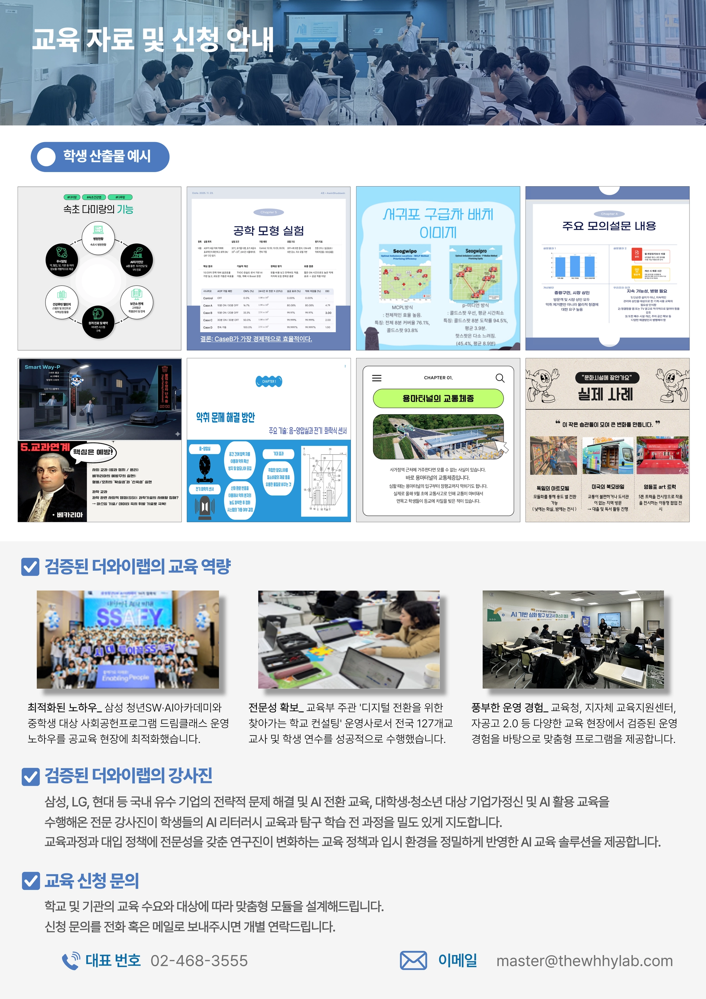

"
AI를 동반자로 한
학생 중심 탐구.
단순히 AI만 활용하는 게 아닌, 다양한 활동과 질문을 통해 학생들의 아이디어를 발산시키고 사고력을 키워주는 프로그램입니다. 학생이 먼저 고민하고 사고한 뒤, 그 생각을 바탕으로 AI와 협력해 문제를 해결하는 과정을 통해 진정한 학생 중심 탐구가 이루어졌습니다.
— Y고등학교 담당 교사
단순히 AI만 활용하는 것이 아닌, 다양한 활동과 질문을 통해 학생들의 아이디어를 발산시키고 사고력을 키워주는 프로그램, 그 현장의 목소리를 모았습니다.
단순히 AI만 활용하는 게 아닌, 다양한 활동과 질문을 통해 학생들의 아이디어를 발산시키고 사고력을 키워주는 프로그램입니다. 학생이 먼저 고민하고 사고한 뒤, 그 생각을 바탕으로 AI와 협력해 문제를 해결하는 과정을 통해 진정한 학생 중심 탐구가 이루어졌습니다.
학생들은 진로와 연계해야 한다는 고정관념에 사로잡혀 탐구 주제 선정을 가장 힘들어하는데, 질문과 상상에서 시작해 주제를 다듬어 가는 과정을 모두 즐거워했습니다. 특히 탐구의 목적, 나아가 공부의 목적을 명확히 인지시켜주어 '사회에서 어떤 역할을 하는 사람이 될 수 있을까' 진지한 고민으로 연결되게 하는 훌륭한 프로그램입니다.
중·고등 학생들이 직접 전하는, 더와이랩 AI 진로·탐구 프로그램의 변화 후기.
하천 범람 문제를 해결할 때 인공 장치에 의존하는 발상을 당연하게 여기지 않고, 유체 역학을 이용해 물이 스스로 빠져나갈 통로를 설계하면 자동 배수가 가능하다는 관점 전환이 신선했다. 기본 물리 원리를 창의적으로 재해석해 자연과 조화롭게 문제를 해결하는 방식을 더 탐구해보고 싶다.
AI를 활용한 모의실험이나 모의설문을 생각해본 적 없었는데, 앞으로도 유용하게 쓸 것 같다. AI로 공학 시뮬레이션을 설계해 원하는 결과가 나올 때까지 상황과 조건을 수정하며 결과를 도출한 경험이 가장 인상 깊었다.
과학과 인문 분야에 특화된 학생들을 한 조에 융합해 각자 잘하는 역할로 분업하여 효율적인 주제 탐구를 완성하는 놀라운 성과를 거뒀다. 매력적인 탐구 방식이자, 앞으로 내게 큰 영향을 줄 거라 생각한다.
이번 탐구로 내가 얻은 가장 큰 자산은 단연 자신감이다. 이전까지는 아무리 애써도 '탐구'라는 부담에 지레 한계를 정했는데, AI와 팀원들과 함께라면 수준 높은 퀄리티의 탐구를 완성할 수 있겠다고 생각했다.
연구원을 꿈꾸는 학생으로 하이플라이 활동을 통해 고교학점제를 어떻게 이해해야 할지 배울 수 있어 유익한 시간이었다. AI 사용을 기피하던 편이었는데, AI를 어떻게 다루느냐에 따라 나에게 큰 도움이 될 수 있다는 것을 깨달았다.
막연하기만 했던 진로 탐구가 AI와 함께라면 한 발씩 구체화될 수 있다는 걸 깨달았다. 정답을 찾는 공부가 아니라 좋은 질문을 만드는 공부의 재미를 처음 경험했다.
중·고등 학생들이 직접 만든 분석 결과·시뮬레이션·앱 설계 등 실제 산출물을 일부 공개합니다.

삼성청년 SW·AI아카데미와 중학생 대상 사회공헌프로그램 드림클래스 운영 노하우를 공교육 현장에 최적화했습니다.
교육부 주관 '디지털 전환을 위한 찾아가는 학교 컨설팅' 운영사로서 전국 100개교 교사 및 학생 연수를 성공적으로 수행했습니다.
교육청, 지자체 교육지원센터, 자공고 2.0 등 다양한 교육 현장에서 검증된 운영 경험을 바탕으로 맞춤형 프로그램을 제공합니다.
전화 또는 메일로 신청 문의해 주세요. 학교 및 기관의 수요에 따라 맞춤형 모듈로 설계해 드립니다.